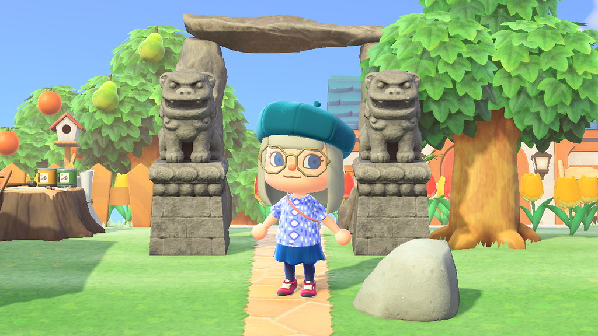

Animal Crossing has always been there throughout my life. I have played multiple versions of Animal Crossing on different consoles and devices. Here is a list of the Animal Crossing versions I played and the devices I used to play them.
normanack - Flickr - CC BY 2.0.
Image of a boat in Animal Crossing: New Leaf.
Animal Crossing is a video game series published by Nintendo. This video game is a more casual, relaxing, wholesome, and open-ended game as players are able to do as they like. Players are able to build and decorate their town and house, interact with villagers, and do other activities such as fishing.
In Animal Crossing, you can also invite friends over to your town. This way, you can play with friends, show off your town, and have a fun time together!
The latest version of Animal Crossing, Animal Crossing: New Horizons, on the Nintendo Switch, offers even more to players. The graphics are much better, the game allows more creativity and customization in your town, and there are more villager interactions! I hope to be able to play this version of the game in the future.
Charlotte Powell - Flickr - CC BY-NC-ND 2.0.
Image of Animal Crossing: New Horizons.